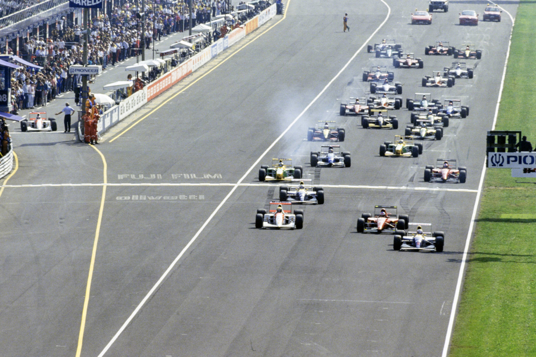

Senna vence depois que Mansell e Patrese têm problemas. Brundle, 2º, e Schumacher 3º, e Benetton agora 2º no campeonato de construtores. Ambos Ferrari abandonam cedo. Fittipaldi e Modena não se qualificam. Mansell e Honda anunciam abandono da F1 em grande movimentação do paddock.
Por Francisco Santos
Depois que conquistaram os respectivos campeonatos de pilotos e de construtores, Mansell e Williams-Renault ainda não repetiram o seu ritual vitorioso de 1992. Agora em Monza era a vez de Riccardo Patrese ganhar, e Mansell fez tudo para isso: liderou como de costume com folga logo de início e até à 19ª volta, aumentando o seu avanço sobre Senna, que havia conseguido um lugar na primeira fila do grid, até 10s; esperou que Patrese recuperasse do seu quatro lugar no grid, e se chegasse a ele depois de ultrapassar o diabólico Alesi (que conseguira a sua melhor colocação deste ano – 3º – no grid graças a um fantástico motor de qualificação) e um Senna mais preocupado em conservar seus pneus para um eventual final mais rápido; e, finalmente, à 20ª volta dá ostensivamente passagem a seu colega de equipe. “Antes da prova tínhamos combinado que eu faria os possíveis para o Riccardo ganhar esta sua corrida em casa, o que era justo pelo tanto que ele me ajudou a conquistar o título este ano”, apontou Mansell no final.
Só que nenhum dos dois pilotos da Williams, e muito menos Patrick Head, que era convidado na cabine do Eurosport para fazer comentários à prova, poderiam prever que em ambos os carros se desse o mesmo problema com a bomba hidráulica que alimenta a suspensão ativa e o comando semi-automático de troca de marchas. Assim, depois de deixar Patrese passar, Mansell ficou com a suspensão rígida e em baixo, e o câmbio encravado em sexta, tendo que reduzir bastante o andamento e depois que abandonar. Patrese ficava incontestado na frente, com avanço suficiente sobre Senna, mas pouco depois o mesmo problema com a bomba hidráulica afetava o italiano que tinha de reduzir o ritmo e ver fugir-lhe uma vitória certa ao ser ultrapassado por Senna. Nas últimas voltas ficaria com o câmbio preso em quarta marcha e desceria para quinto classificado. Era notório nas últimas voltas o problema com a suspensão sem pressão hidráulica: totalmente em baixo, o difusor traseiro arrastava-se perigosamente pela pista.

Sorte e talento
Numa vitória há sempre um elemento de sorte. Maior ou menor. Quanto mais não seja para não se ter qualquer problema. Também é sempre necessária uma certa dose de talento. Para estar no lugar certo. Mantê-lo ou conquistá-lo, seja por andamento próprio, seja, como em mais este caso, agora com Ayrton, Brundle e Schumacher, para ter mantido um ritmo suficientemente certo e rápido para conseguir herdar o comando na hora certa. O brasileiro conquistou o seu segundo tempo nos treinos, que o colocou ao lado de Mansell no grid, de forma espetacular, logrando bater Jean Alesi que dispunha de um demoníaco motor de qualificação Ferrari, especialmente preparado para tentar corresponder ao que os milhares de tiffosi esperavam da Scuderia na sua casa. Nas primeiras voltas imprimiu um ritmo suficiente para não se afastar muito de Mansell e depois de Patrese. No final, já no comando depois do problema de Patrese, foi retardado pela quebra do escapamento. A prova de Brundle foi consistente, depois de ter perdido dois lugares na largada e de se ter contido nas ultrapassagens, o que levou o inglês ao seu melhor resultado no mundial. Quanto a Schumacher fez uma recuperação fantástica. Na largada, errou ao engatar a 5ª em vez da 3ª e perdeu muitos lugares, e logo a seguir, ainda na 1ª volta bateu em Boutsen, pelo que teve de ir ao box trocar o bico, baixando para último. Recuperou para terceiro no final, o que garantiu os segundos lugares nos campeonatos de pilotos e de construtores para ele e para a Benetton, que continua sendo a única equipe a pontuar em todas as provas. Outra recuperação fabulosa foi a de Berger. Teve problemas de motor na volta de apresentação e largou para a corrida do box, com o carro reserva. No final da Ia volta já estava em 21º, à 8ª volta era 11º, à 14ª, quando parou para trocar de pneus era 9º, baixando para 12s e depois de passar De Cesaris e Lehto instalou-se em 7º, para depois também beneficiar dos problemas dos Williams e de Boutsen.
Paddock tumultuado
Mais do que nunca o paddock de Monza esteve tumultuado. Foi uma correria geral. Mansell ganhou a prova de resistência com corridas entre vários motorhomes. Freneticamente. Os jornalistas também, a tentativa de acompanharem o louco desenrolar dos acontecimentos. Desde Mansell conversando ostensivamente em público com Ron Dennis até um jantar com Peter Collins, valeu de tudo. Pobre F1…
Os tiffosi, este ano em menor número em Monza, como seria de esperar devido à péssima campanha dos Ferrari, tiveram um fim-de-semana cheio de desilusões. Na sexta-feira os raros apoiantes da Andrea Moda não tiveram possibilidades de ver os carros pretos. O camião ainda entrou no paddock com uma liminar de um juiz, que depois se julgou impotente para resolver o problema desportivo. A FISA excluía a equipe e a impedia de entrar na pista. Não houve a farsa das prés.
Nova desilusão
Nos treinos oficiais, ainda houve um lampejo de euforia quando Jean Alesi, com um motor especial de qualificação que lhe dava mais 11 km/h de velocidade de ponta do que nos treinos FOCA, chegava ao segundo tempo, e parecia que os tiffosi iriam ter a alegria de ver um Ferrari na primeira fila do grid. Mas, Ayrton Senna roubou-lhes essa ilusão com uma volta espantosa. Para piorar as coisas, Stefano Modena não conseguiu de novo qualificar-se, o mesmo acontecendo a Christian Fittipaldi. Alboreto ser o segundo mais rápido em reta não terá sido uma consolação para os italianos. No entanto, os treinos de Monza foram curiosos, pois mostraram pela primeira vez num fim-de-semana de GP a suspensão ativa da McLaren que no entanto só correu na sexta-feira num dos carros, sendo todos adaptados para sábado com a convencional. Na corrida, foi a desilusão total, depois da largada fenomenal de Alesi a que Senna pos cobro logo na freada para a primeira chicane. Os dois Ferrari abandonavam logo à 13ª volta, com Alesi vítima da bomba de gasolina e Capelli por um erro ou um desequilíbrio na freada para a Parabólica. No final, o único representante da Ferrari era o Dallara de Martini. Nem a tarde desastrosa da Renault (todos os quatro carros com problemas) deve ter sido consolação. Alboreto terminou pela sexta vez no 7º lugar.